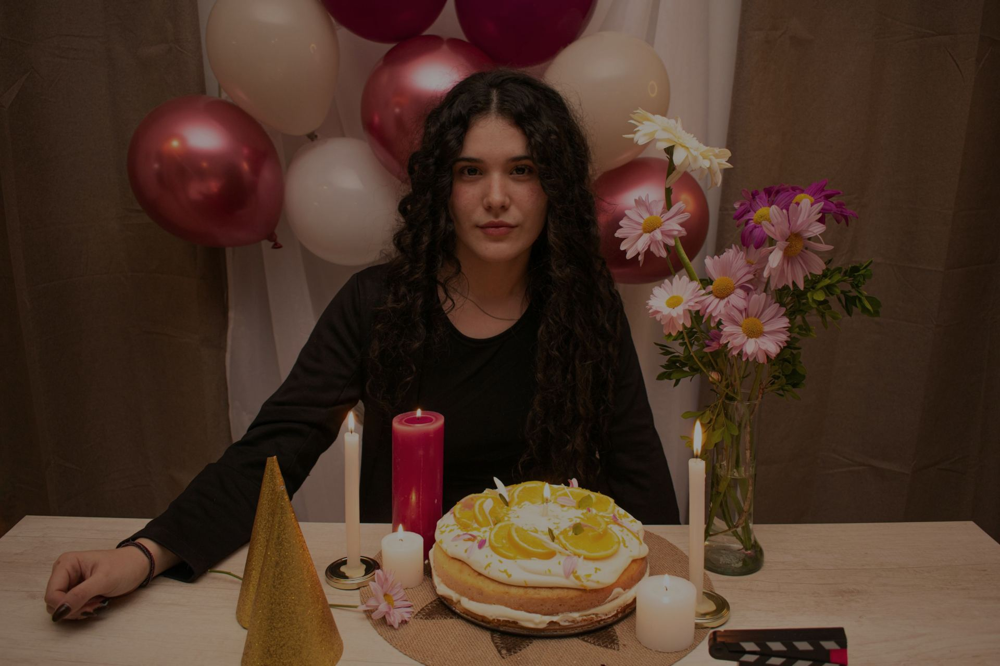

Cortometrajes
Ficción de autor, desde la idea hasta la copia final.

 Una producción de LoopFilms
Una producción de LoopFilms
En el festejo de sus 21 años, Lucía recibe un collar de parte de su amigo Lautaro que desata una serie de sucesos inexplicables y un progresivo deterioro físico.
LoopFilms es una productora universitaria emergente enfocada en la creación de contenidos cinematográficos independientes. Buscamos dar voz a historias jóvenes, explorando nuevas narrativas y formatos visuales a través de la experimentación y el trabajo colaborativo.
Somos seis estudiantes de la Tecnicatura en Diseño de Imagen, Sonido y Multimedia de la FADyCC (UNNE), en Corrientes Capital.
Nos ocupamos de todo el proceso: guion, rodaje, sonido, arte y montaje.
Ficción de autor, desde la idea hasta la copia final.
Piezas cortas para presentar un proyecto y generar expectativa.

El tono de una película o un evento, en un par de minutos.
Seis estudiantes, seis áreas. Las fotos son del rodaje de He visto a Luci.

Dirección, guion y montaje

Producción

Dirección de fotografía

Dirección de sonido

Dirección de arte

Asistencia de producción y dirección
En el festejo de sus 21 años, Lucía recibe un collar de parte de su amigo Lautaro que desata una serie de sucesos inexplicables y un progresivo deterioro físico. Cuando el objeto es apartado y la calma parece regresar, su reaparición en la habitación de Lucía revela que la pesadilla continúa…
Festival del Sol 2026. Presentamos LoopFilms y el proyecto en la instancia de pitching del festival.
¿Tenés una historia para contar o un proyecto que necesita teaser o tráiler? Escribinos y lo charlamos.